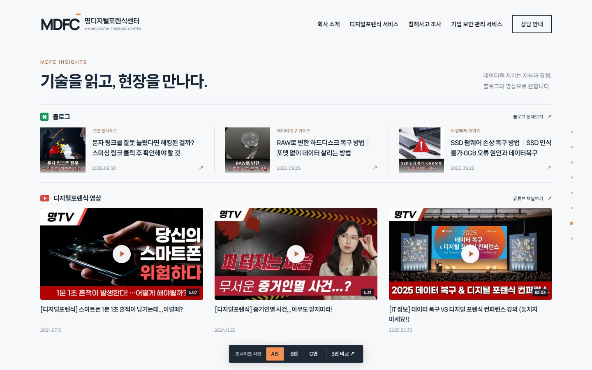
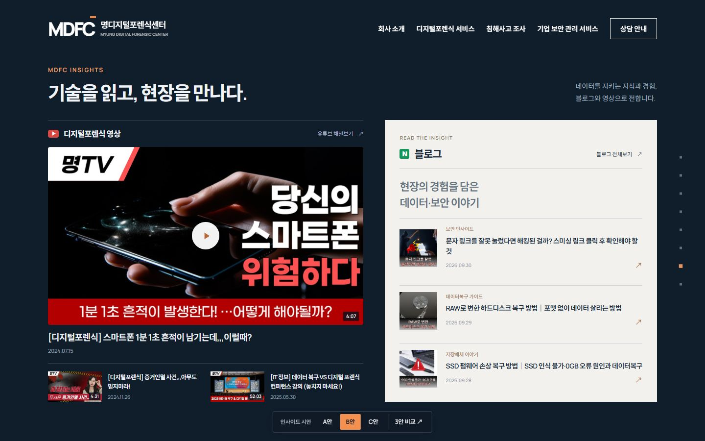
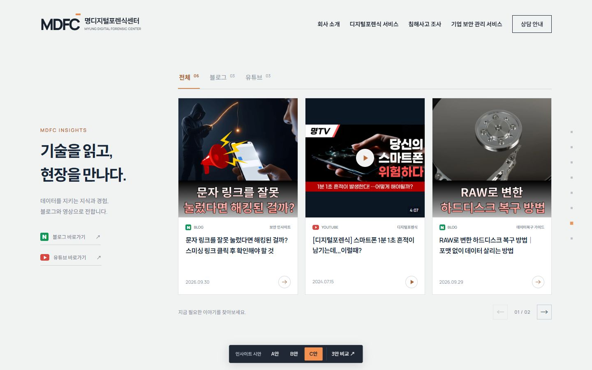

INSIGHTS · THREE DIRECTIONS
블로그와 포렌식 영상에 시선이 머무는 인사이트 디자인을 비교해 보세요.

한눈에 보는 블로그와 영상
블로그 3개와 영상 3개를 두 줄로 펼쳐, 한 화면에서 관심 있는 콘텐츠를 바로 고릅니다.

영상에 시선이 머무는 구성
큰 대표 영상과 밝은 블로그 패널을 대비시켜, 기술 영상과 읽을거리를 분명하게 구분합니다.

필요한 콘텐츠만 가볍게 탐색
큰 타이틀 옆에 콘텐츠 카드를 배치하고, 전체·블로그·유튜브를 선택하며 살펴봅니다.